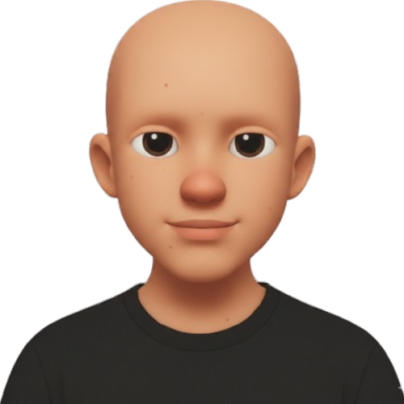

- SAPUI5
- Fiori Elements
- Git

Gian Federspiel
SAP Software Developer
About Me
Junior Software Developer with a Federal Diploma in Application Development and practical experience in SAP development and agile teams. Known for a structured, solution-oriented working style and clear communication with technical and non-technical stakeholders. Currently enrolled in a Bachelor’s program in International IT Management, with a strong interest in project coordination, digital transformation, and IT leadership.
Work Experience
SAP Application Developer – Suva (August 2025 – present)
- Independently managed and implemented an internal development project
- Coordinated with internal stakeholders and departments
- Contributed to migration from SAP CRM to S/4HANA
Apprentice Software Developer – Suva (August 2020 – July 2024)
- Co-developed and maintained SAP web apps using SAPUI5
- Implemented REST-based services
- Worked independently and in agile teams using Scrum and SAFe
Education
- Bachelor Studies International IT Management – HSLU (September 2025 – Present)
- Vocational School for Application Development – BBZ Sursee (August 2020 – July 2024)
- Federal Vocational Baccalaureate in Technology – BBZ Lucerne (August 2020 – July 2024)
Projects
Training Certificate Management Platform SAPUI5 · S/4HANA · SAP CRM Migration
Led the redesign of a legacy suite into a modular platform that handles training provider submissions, approval workflows, and operator ID issuance for heavy-equipment certifications.
- My Role
- End-to-end ownership from stakeholder discovery to UI build-out and backend integration.
- Key Improvements
- Introduced guided forms, automated approvals, and integrated billing to replace manual email processes.
- Impact
- Cut administrative turnaround time by enabling real-time status tracking for providers and internal teams.
Strava Dashboard Node.js · Express · Vite · Strava API
Built a full-stack Strava companion that pairs an Express proxy with a responsive dashboard to surface weekly and monthly training metrics, route maps, and workout summaries without exposing OAuth secrets in the browser.
- My Role
- Owned the monorepo, shipped the token-refreshing proxy, and designed a mobile UI that surfaces Render cold-start warnings and lets users retarget environments via config or localStorage.
- Key Improvements
- Automated access-token renewal, merged run/workout data with inline GPS and HR charts, and simplified setup through one .env plus paired dev servers.
- Impact
- Delivers a single real-time view of mileage and effort, removing manual Strava exports and keeping athletes informed even during 50-second backend warm-ups.
Core Skills
- SAP CRM
- S/4HANA
- SAP BTP
- Agile (Scrum, SAFe)
- DevOps Collaboration
Languages & Culture
- German Native
- English C1 / IELTS Band 7.5